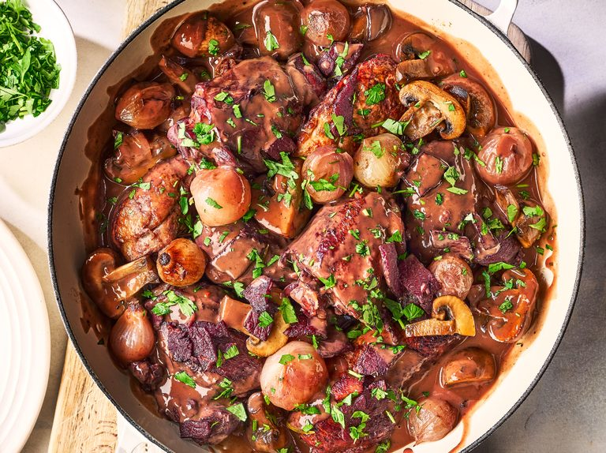
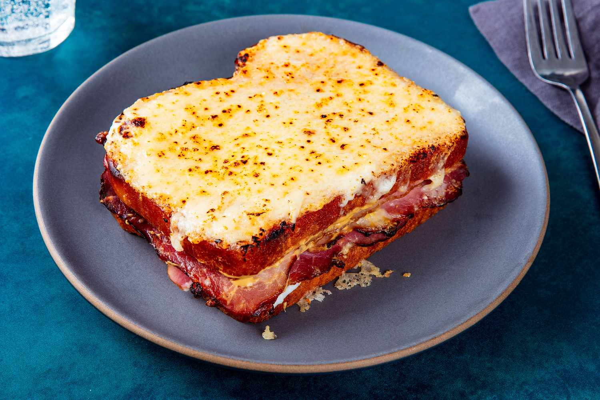

Ratatouille
Ingredients:
- 2 zucchinis
- 2 eggplants
- 2 bell peppers
- 1 onion
- 4 tomatoes
- 2 tbsp olive oil
- Salt and pepper
Instructions:
- Slice vegetables and layer them in a baking dish.
- Drizzle olive oil, season, and bake for 45 minutes at 375°F.
Season: Best enjoyed in summer.

Coq au Vin
Ingredients:
- 1 whole chicken, cut
- 2 cups red wine
- 1 cup chicken broth
- 2 carrots
- 1 onion
- 2 tbsp butter
Instructions:
- Marinate chicken in wine overnight.
- Brown chicken, add vegetables, and simmer with broth.
Season: Perfect for winter.
Bouillabaisse
Ingredients:
- 1 lb assorted seafood
- 4 tomatoes
- 1 onion
- 4 garlic cloves
- 1/2 cup white wine
- 1 tbsp olive oil
Instructions:
- Sauté garlic and onion in olive oil.
- Add tomatoes, wine, and seafood. Simmer until cooked.
Season: Great in spring.

Croque Monsieur
Ingredients:
- 4 slices of bread
- 4 slices of ham
- 1 cup grated Gruyère cheese
- 1/2 cup béchamel sauce
Instructions:
- Layer ham and cheese between bread slices.
- Top with béchamel and bake until golden.
Season: Perfect year-round.

Salade Nicoise
Ingredients:
- 2 cups mixed greens
- 1/2 cup green beans
- 1/2 cup cherry tomatoes
- 2 boiled eggs
- 1 can tuna
- Olive oil and lemon juice
Instructions:
- Arrange greens, vegetables, and tuna on a plate.
- Drizzle with olive oil and lemon juice.
Season: Ideal for summer.

Quiche Lorraine
Ingredients:
- 1 pie crust
- 4 eggs
- 1 cup heavy cream
- 1 cup Gruyère cheese
- 100g bacon bits
Instructions:
- Prebake crust, fill with egg mixture and bacon.
- Bake until set.
Season: Great for fall.